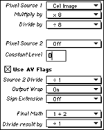
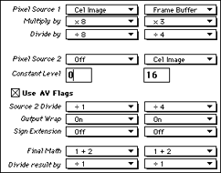

This section explains how the 3DO hardware processes images and cels.
Understanding these concepts helps you choose appropriately among image
and cel types and take advantage of the 3DO hardware's special effects
capabilities.
This section provides more information about images and cels, discussing
the following topics:
Cels and images are graphics formats that take advantage of the 3DO
hardware. Images and cels differ in how they are treated by the 3DO
hardware:
Images are projected directly onto the frame buffer, processed by the
display generator and then displayed on the TV screen.
Cels are first processed by the cel engine, then projected onto the
frame buffer, passed to the display generator, and displayed on the TV
screen.
Figure 1 shows how a cel moves through the cel engine onto the frame buffer,
is processed by the display generator, and is then displayed on the TV
screen.
Figure 1: How the 3DO hardware processes a cel.
As a result of the additional processing a cel receives, images and cels
have different characteristics:
Images are static, well-suited for a background. They have to start
out at the size of the screen. Because there's no processing overhead
involved, a relatively big image file can be displayed relatively
quickly.
Cels are dynamic. The can be moved, distorted, and zoomed, and can use
special effects, as explained below.
A 3DO cel is really just another file format, like PICT or TIFF. A cel
consists of data data organized in a particular way. Each cel consists of
the following pieces:
CCB (cel control block)-has information about the cel's position and
distortion. These values are usually set by the program.
Palette-contains the colors. The artist can determine the palette with
one of the tools listed in Tools for
3DO Art Production.
Color for both images and cels comes from a color lookup table or CLUT.
The CLUT is inside the hardware; it is the master palette for the display,
and consists of registers filled with 15-bit values.
For images and for uncoded cels, every pixel has to have its own 15-bit
value to specify the exact color in the CLUT. As a result, an image or an
uncoded cel is large and uses a lot of RAM but the color is precise.
Note: On the 3DO system, an 8-bit cel has the same resolution but
fewer colors than a 16-bit cel.
Color for coded cels
Coded cels use less disk space than uncoded cels. In many cases, this
happens without a visible deterioration of the visual quality. In a coded
cel, each pixel has a maximum of 5 bits available to carry color
information or other information. Those bits point to a Palette Lookup
Table or PLUT. This PLUT acts as an intermediary between the color
lookup table (CLUT) and the cel.
Figure 2 illustrates how an uncoded cel and a coded cel access the CLUT: the
uncoded cel needs to provide 16 pixels of information for each 16-bit
color value in the system color table. The coded cel, on the other hand,
needs only 5 pixels of information. Those five pixels point to a 16-bit
value in the PLUT that in turn points to the 16-bit value in the PLUT.
Since one PLUT is used for all the pixels in the cel, the cel can be a lot
smaller.
Figure 2: How uncoded and coded cels use the system color
table.
Here's some detail on why coded cels are used frequently:
Coded cels do allow special effects, just as uncoded cels.
Coded cel have individual PLUTs. If you use coded cels, you can still
have a lot of colors on screen since each cel has its own PLUT.
Coded cels are smaller than uncoded cels. The smaller the cel, the
faster the response of the title, the better the frame rate of the
animation, and the better the quality of music you can add.
Most titles don't move rectangular shapes around a screen, but rather
creatures, vehicles, or other objects. You therefore need to make the
region around the object transparent.
The 3DO hardware lets you specify transparent regions in a cel in two
ways:
Specify transparent regions using a black Transparency mask (3DO
CelWriter, 3DO Coded8 CelWriter, 3DO Animator). No true black (RGB 0-0-0)
is possible for any pixel in the cel; you have to use RGB 0-0-9.
Specify transparent regions using a special background color (3DO
Animator, 3DO Coded-8 CelWriter). True black (RGB 0-0-0) can be used the
cel.
For information on creating irregularly shaped cels, see the relevant
sections in the manuals for the individual tools.
Special effects are possible for any kind of cel, and are determined by a
part of the cel called the PIXC. In the simplest case, the PIXC determines
whether each pixel in the cel is displayed as opaque (the default), with
enhanced or reduced luminance, or mixed with the background.
By default, each pixel in the cel is processed using the settings in
Figure 3. The figure actually shows the left half of the Effects Editor of
the 3DO PostPro tool-more about the right half later.

Figure 3: PIXC settings specification.
Note how just using one set of PIXC options, you can multiply or divide
the pixels in a cel by a different number (resulting in enhanced or
reduced luminance) or mix it with the background picture in the frame
buffer using the Pixel Source 2 pop-up menu. Consider experimenting with
these settings for best results.
Using two PIXC settings in one cel
In addition to changing the display for the whole cel, you can also change
the display for only part of the cel, for example, display most of the cel
as opaque and a window as translucent, or a light as more luminous.
To do that, you specify two groups of pixels in the cel. One group of uses
one set of pixel settings, the other a second, different set:
All pixels that are not masked (or don't use a special color) use the
settings on the left, as explained above. This group of PIXC settings is
also referred to as P-Mode B or P-Mode 1.
All masked pixels (for example, all stained glass window pixels) use
the settings on the right. This group of PIXC settings is also referred to
as P-Mode A or P-Mode 0.
Figure 4 shows the two different paths each pixel in the cel has to choose
from: Either the path on the left-the group of PIXC settings called P-Mode
A-or the path on the right-the group of PIXC settings called P-Mode B.

Figure 4: PIXC settings for two different groups of pixels.